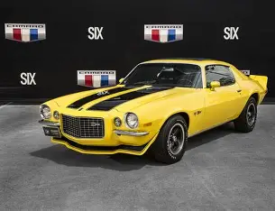

A história do Camaro começa em 1966, quando a General Motors lançou o modelo como uma resposta ao sucesso do Ford Mustang. O Camaro foi projetado para ser um muscle car, oferecendo uma combinação de desempenho esportivo e estilo. Desde então, o Camaro tem sido um símbolo da cultura automotiva americana, com várias gerações e modelos que refletem a evolução do automobilismo.
Entre os modelos mais conhecidos da primeira geração estão:Camaro SS (Super Sport), versão de alto desempenho com motor mais potente e detalhes esportivos.Camaro Z/28, focado em desempenho para corridas de estrada, tornando-se popular em séries de automobilismo como a Trans-Am. A primeira geração foi produzida sobre a plataforma F-body da GM, com tração traseira e acabamento personalizável, permitindo que compradores optassem por motores, transmissões e pacotes de estilo variado. O design incluía grade larga, faróis redondos e proporções longas que se tornaram características icônicas.

A estrutura do Chevrolet Camaro antigo é composta por um chassi robusto, que pode incluir uma plataforma GM F-body ou um chassis convencional.
Os motores disponíveis variam de motores de seis cilindros em linha a motores V8, dependendo da geração e do modelo.
A suspensão é geralmente esportiva, com pneus de alta performance e freios a disco, proporcionando um desempenho emocionante.
O design do Camaro é marcado por linhas aerodinâmicas, faróis embutidos e um capô longo, que são características distintas de cada geração.
Veja também um vídeo mostrando um camaro antigo
Curiosidades
O nome "Camaro" tem origem curiosa, sendo uma gíria inventada para um carro que era um "companheiro" dos motoristas.
O Camaro ganhou notoriedade ao aparecer em "Transformers", onde se transforma no personagem Bumblebee.
O Camaro é o único superesportivo com opção de capota conversível.
O Camaro vendeu mais que o dobro do Ford Mustang em 10 anos no Brasil.
O Camaro é um dos modelos mais valorizados pelos colecionadores devido ao seu charme clássico e estilo inconfundível.